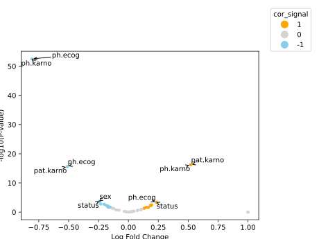

Bioplots.volcano¶
-
Bioplots.volcano(df, lfc, pvalue, ax=None, color_list=('orange', 'lightgray', 'skyblue'), visible_hits=10, label=None, lfc_cutoff=1, pvalue_cutoff=0.05, text_adjust={'arrowprops': {'arrowstyle': '->', 'color': 'k'}})¶ It plots significance versus fold-change on the y and x axes, respectively.
- Parameters
- dfpd.DataFrame
Dataset for plotting.
- lfcstr
Names of variables in
df, which contians log fold change values- pvaluestr
Names of variables in
df, which contians p values- color_listtuple, optional
A list of color to be assigned to significant positive hits, non-significant hits, and significant negtive hits, respectively.by default (‘orange’, ‘lightgray’, ‘skyblue’)
- visible_hitsint or str, optional
Number of hits to show the label or a list of customized label to show, by default 10
- labelstr
Names of variables in
df, which contians labels for points. by default None- lfc_cutofffloat, optional
Cutoff of log fold changes, by default 1.0 significant points with
lfclarger thanlfc_cutoffare the positive hits. significant points withlfclower than -lfc_cutoffare the negative hits.- pvalue_cutofffloat, optional
Cutoff of p values, by default .05 Points with
pvaluelower than the cutoff are considered significant.- text_adjustdict, optional
Annotation text property, by default dict(arrowprops=dict(arrowstyle=’->’, color=’k’)) Reference: https://adjusttext.readthedocs.io/en/latest/
- axmatplotlib Axes, optional
Axes object to draw the plot onto, otherwise uses the current Axes.
- Returns
- axmatplotlib Axes
Returns the Axes object with the plot drawn onto it.
Examples
Visualize correlation with significance:
>>> import Bioplots as bpt >>> from scipy.stats import pearsonr >>> df = bpt.get_rdataset('lung') >>> def pearson_pvalue(x,y): ... return pearsonr(x,y)[1] >>> df_cor = df.corr().reset_index().melt(id_vars=['index']) >>> df_pvalue = df.corr(method=pearson_pvalue).reset_index().melt(id_vars=['index']) >>> cor_pvalue = df_cor.merge(df_pvalue,on=['index','variable']) >>> cor_pvalue.rename(columns={'value_x':'cor','value_y':'pvalue'},inplace=True) >>> cor_pvalue.head() >>> bpt.volcano(df=cor_pvalue,lfc='cor',pvalue='pvalue',lfc_cutoff=0.1,pvalue_cutoff=.05,label='index');
